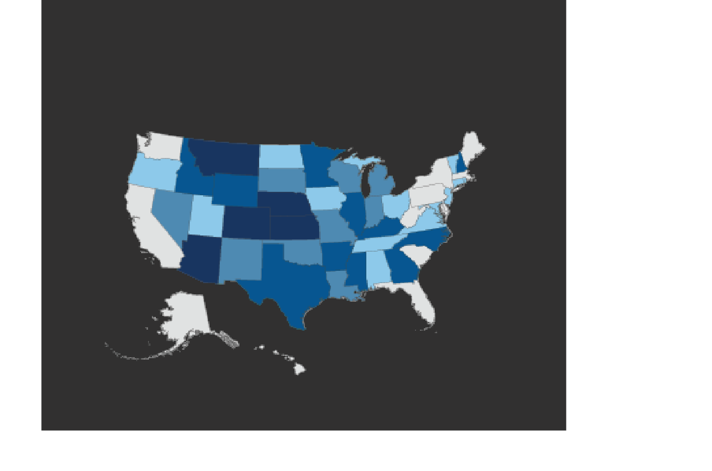

The Clinton Presidential Center:
10 Years of Impact Around the World
Clinton Presidential
Center Visitors
SEE WHERE VISITORS HAVE COME
FROM ACROSS THE UNITED STATES

The Clinton Foundation's
Global Impact
SEE WHERE CLINTON FOUNDATION INITIATIVES
ARE OPERATING AROUND THE WORLD
Interactive Graphic
of International Visitors
SEE WHICH COUNTRIES INTERNATIONAL
VISITORS HAVE COME FROM
International Travel by President Clinton, Secretary Clinton, and Chelsea Clinton
SEE WHERE PRESIDENT CLINTON,
SECRETARY CLINTON, AND
CHELSEA CLINTON HAVE TRAVELED SINCE 1994
Student Visitors at the
Clinton Presidential Center
SEE WHERE STUDENTS AND SCHOOLS HAVE
COME FROM ACROSS THE UNITED STATES
Clinton School of Public Service Student Hometowns and Field Service Projects
SEE WHERE CLINTON SCHOOL SCHOLARS HAVE COME FROM AND WHERE THEY HAVE COMPLETED THEIR FIELD SERVICE PROJECTS